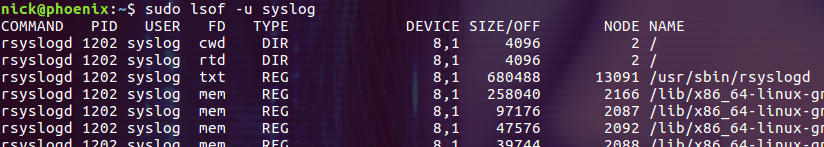

lsof
lsof(list open files)是一个查看进程打开的文件的工具。
在 linux 系统中，一切皆文件。通过文件不仅仅可以访问常规数据，还可以访问网络连接和硬件。所以 lsof 命令不仅可以查看进程打开的文件、目录，还可以查看进程监听的端口等 socket 相关的信息。本文将介绍 lsof 命令的基本用法，本文中 demo 的演示环境为 ubuntu 18.04。
常用选项
1 | -a 指示其它选项之间为与的关系 |
基本输出
如果不带任何选项执行 lsof 命令，会输出系统中所有 active 进程打开的所有文件，结果就是我们被输出的信息所淹没，这没有任何的意义。我们先让 lsof 命令输出当前 Bash 进程打开的文件，并截取其中的一部分结果来介绍输出内容中都包含哪些信息：
1 | COMMAND：程序的名称 |
下面简单介绍一下 FD 列和 TYPE 列中的常见内容。
**FD 列中的常见内容有 cwd、rtd、txt、mem 和一些数字等等。**其中 cwd 表示当前的工作目录；rtd 表示根目录；txt 表示程序的可执行文件；mem 表示内存映射文件：
还有一部分 FD 是以数字表示的，比如标准输入输出文件：
数字后面的字母表示进程对该文件的读写模式，比如上图中的 u 表示该文件被打开并处于读取/写入模式。除了 u，还有 r 表示只读模式，w 表示只写模式，还可以同时应用 W 表示该进程拥有对文件写操作的锁。下图是截取的 docker daemon 进程打开的文件列表，其中显示了 FD 的不同模式：
**TYPE 列中常见的 REG 和 DIR 分别表示普通文件和目录。**而 CHR 和 BLK 则分别表示字符和块设备，unix、fifo 和 IPv4/IPv6 分别表示 UNIX domain 套接字、先进先出(FIFO)队列和 IPv4/IPv6 套接字。
下面我们来介绍一些 lsof 命令的常见用法。
查看哪些进程打开了某个文件
直接指定文件的名称作为 lsof 的参数就可以查看哪些进程打开了这个文件，下面的命令查询打开了 /bin/bash 文件的进程：
$ sudo lsof /bin/bash
除了普通文件，也可以是设备等文件(下面命令的输出很长，图示只是截取的一小部分)：
$ sudo lsof /dev/sda1
查看哪些进程打开了某个目录及目录下的文件
这里分两种情况，**+d 选项不执行递归查询**，只查找那些打开了指定目录以及指定目录下文件和目录的进程，比如：
$ sudo lsof +d /var/log
而 +D 选项则会对指定的目录进行递归：
$ sudo lsof +D /var/log
在卸载文件系统时，如果有进程打开了该文件系统中的文件或目录，卸载操作就会失败。因此最好在卸载文件系统前通过 lsof +D 检查文件系统的挂载点，杀掉相关的进程然后再执行卸载操作。
查看某个进程打开的所有文件
通过 -p 选项并指定进程的 PID 可以输出该进程打开的所有文件。比如我们想要查看 cron 程序打开的文件，可以先用 ps -C cron 命令查出进程的 PID：
然后把该 PID 传递给 lsof 命令的 -p 选项：
$ sudo lsof -p 1152
组合多个选项
如果为 lsof 命令指定多个选项，这些选项间默认是或的关系。也就是说满足任何一个选项的结果都会被输出。可以添加额外的 -a 选项，它的作用就是让其它选项之间的关系变为与，比如下面的命令：
$ sudo lsof -a -p $$ -d0, 1,2
其中的 -p 选项指定了当前进程的 PID，而 -d 选项则用来指定进程打开的文件描述符(可以通过逗号分隔多个文件描述符)。添加 -a 选项后，结果输出为当前进程打开的文件描述符为 0、1、2 的文件。
说明，-a 选项的使用有很多条件，具体请参考 lsof man page。
查看指定名称的程序打开的文件
通过 -c 选项可以匹配进程运行的程序(可执行文件)名称。比如我们要查找以字母 cr 开头的程序打开的文件列表：
$ sudo lsof -c cr
还可以同时指定多个 -c 选项，它们之间是或的关系。
如果想对 -c 选项的条件取反，只要在字符串前添加符号 ^ 就可以了，比如：
$ sudo lsof -c ^cr
-c 选项也支持正则表达式，比如下面的命令可以过滤出以 cra 和 cro 开头的程序打开的文件：
$ sudo lsof -c /cr[ao]/
查看被打开的与网络相关的文件
-i 选项用来查看被打开的和网络相关的文件，其参数的格式如下：
[46][protocol][@hostname|hostaddr][:service|port]
46 表示 IP 协议的版本
protocol 表示网络协议的名称，比如 TCP 或 UDP
hostname 或 hostaddr 表示主机地址
service 指 /etc/services 中的名称，比如 smtp 或多个服务的列表
port 表示端口号，可以指定一个或多个
-i 选项默认会同时输出 IPv4 和 IPv6 打开的文件：
$ sudo lsof -i
只列出 IPv4 或 IPv6 打开的文件
$ sudo lsof -i 4
$ sudo lsof -i 6
列出与 22 号端口相关的文件
$ sudo lsof -i:22
列出指定范围内被打开的 TCP 端口
$ sudo -i TCP:1- 1024

查看被打开的 UNIX domain socket 文件
-U 选项输出打开的 UNIX domain socket 文件，这里我们结合 -c 选项来查看 ssh 服务打开的 UNIX domain socket 文件：
$ sudo lsof -a -c sshd -U
查看某个用户打开的所有文件
-u 选项可以指定用户名或 user ID，并且和 -c 选项一样，可以通过逗号分隔多个用户名称或 user ID，也可以通过符号 ^ 对条件取反。
查看某个用户打开的所有文件
$ sudo lsof -u syslog
查看用户 nick 打开的网络相关的文件
$ sudo lsof -a -i -u nick
排除某个用户
$ sudo lsof -i -u ^nick
注意：在有排除条件时，不需要指定 -a 选项。
杀掉某个用户打开了文件的所有进程
$ kill -9 $(lsof -t -u nick)
该命令中的 -t 选项让 lsof 命令只输出进程的 PID：
统计系统打开的文件总数
$ sudo lsof -P -n | wc -l
命令中的 -P 选项表示不解析端口号，-n 选项表示不解析主机名，这两个选项主要的目的是为了提升 lsof 命令的执行速度。wc -l 命令则用来统计 lsof 命令输出的行数。
恢复删除的文件
如果我们一不小心删除了文件，而又知道这个文本被某个进程打开着，就可以通过 lsof 命令来恢复该文件。具体的原理为：
当进程打开了某个文件时，只要该进程保持打开该文件，即使将文件删除，它依然存在于磁盘中。进程并不知道文件已经被删除，它仍然可以通过打开该文件时提供给它的文件描述符进行读取和写入。除了该进程之外，这个文件是不可见的，因为已经删除了其相应的目录索引节点。
进程打开的文件描述符就存放在 /proc/PID/fd 目录下。/proc 目录挂载的是在内存中所映射的一块区域，所以这些文件和目录并不存在于磁盘中，因此当我们对这些文件进行读取和写入时，实际上是在从内存中获取相关信息。lsof 程序就是使用这些信息和其他关于内核内部状态的信息来产生其输出。所以 lsof 可以显示进程的文件描述符和相关的文件名等信息。也就是说我们通过访问进程的文件描述符可以找到该文件的相关信息。
下面的 demo 演示如何通过 lsof 命令恢复被误删的 /var/log/syslog 文件。
先删除日志文件 /var/log/syslog，记着要提前备份一下这个文件，以防万一：
$ sudo rm /var/log/syslog
从上面的信息可以看到 PID 为 1141 的进程打开着该文件，文件描述符为 7，并且显示该文件已经被删除了。接下来我们通过 1141 号进程的文件文件描述符来查看该文件的内容：
$ sudo tail -n 5/proc/1141/fd/ 7
上图说明文件 /var/log/syslog 文件的内容还在，并且可以通过文件描述符访问，接下来通过 IO 重定向的方式重新创建 /var/log/syslog 文件就可以了：
$ sudo sh -c ‘cat /proc/1141/fd/7 > /var/log/syslog’
然后修复文件的权限属性并重启 rsyslog 服务：
$ sudo chown syslog:adm /var/log/syslog $ sudo systemctl restart rsyslog.service
这样就完成了 /var/log/syslog 文件的恢复工作。对于许多应用程序，尤其是日志文件和数据库文件，都可以通过这种方式来恢复。
帮助
-h 选项会输出 lsof 命令的帮助信息：
估计这样的帮助信息也只能逼着你去读 man page 了！
总结
lsof 并不是一个简单的命令，从其 man page 的长度就可以体会到这一点。从本文介绍的小 demo 入手或许可以让你忘记冗长的文档说明，一步步的开始使用并最终掌握这个命令。
参考：
lsof man page
linux lsof命令详解
10 lsof Command Examples in Linux
Linux lsof Command Tutorial for Beginners (10 Examples)
15 Linux lsof Command Examples (Identify Open Files)